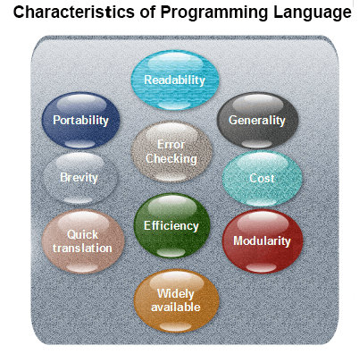

Characteristics of a programming Language
A programming language must be simple, easy to learn and use, have good readability and human recognizable.
Abstraction is a must-have Characteristics for a programming language in which ability to define the complex structure and then its degree of usability comes.
A portable programming language is always preferred.
Necessary tools for development, debugging, testing, maintenance of a program must be provided by a programming language.
A programming language should be well structured and documented so that it is suitable for application development.
